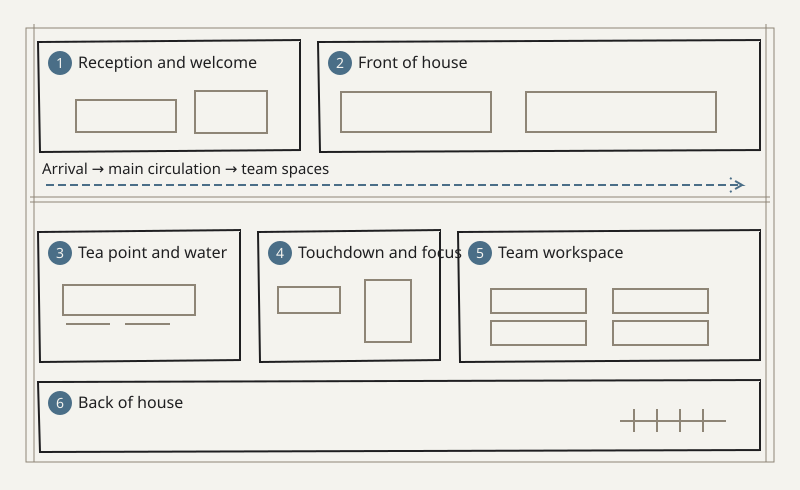
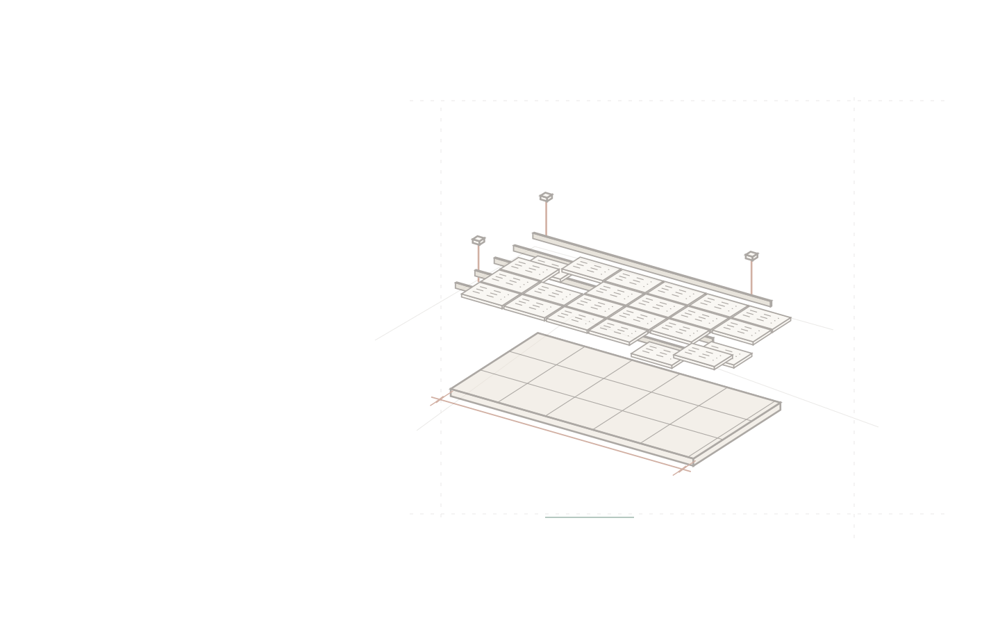
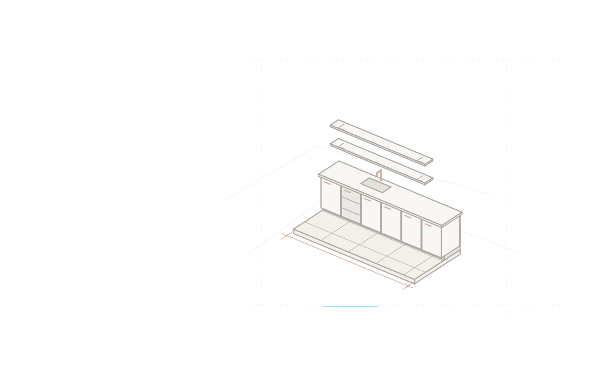
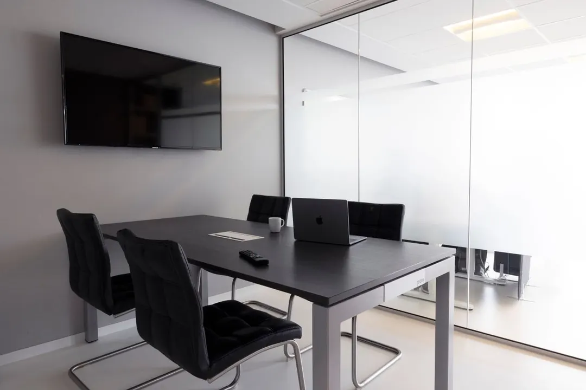

BAMBU / VISUAL DIRECTION / UNLISTED REVIEW
One identity.
Clearly BAMBU.
The current BAMBU Interiors blue-and-bronze identity, alongside the architectural studies that shape the website.
01 / BRAND LANGUAGE
The wordmark, in context.
The refined blue architectural wordmark and bronze Interiors descriptor form the updated identity across the website.
02 / ARCHITECTURAL STUDIES
Drawn with restraint.
Original illustrative studies give the site an architectural vocabulary without suggesting these are project drawings or genuine Revit exports.


03 / SAME SPACE, THREE VIEWS
Sketch → CAD → CGI.
Three views of the same reception concept, from initial sketch to CAD-style coordination study and CGI.



04 / WORKPLACE INTELLIGENCE
Illustration with a purpose.
A conceptual sketch helps test relationships between spaces before a measured layout is produced.

05 / MATERIAL & PRODUCT ATMOSPHERE
Evidence before novelty.
These reference images support product and material storytelling. They do not represent BAMBU-completed projects.
See the named specification examples


DESIGN REVIEW / NEXT DECISION
A direction worth refining.
The updated identity brings the blue wordmark, bronze descriptor, B icon and architectural studies into one visual language.
Return to BAMBU Interiors